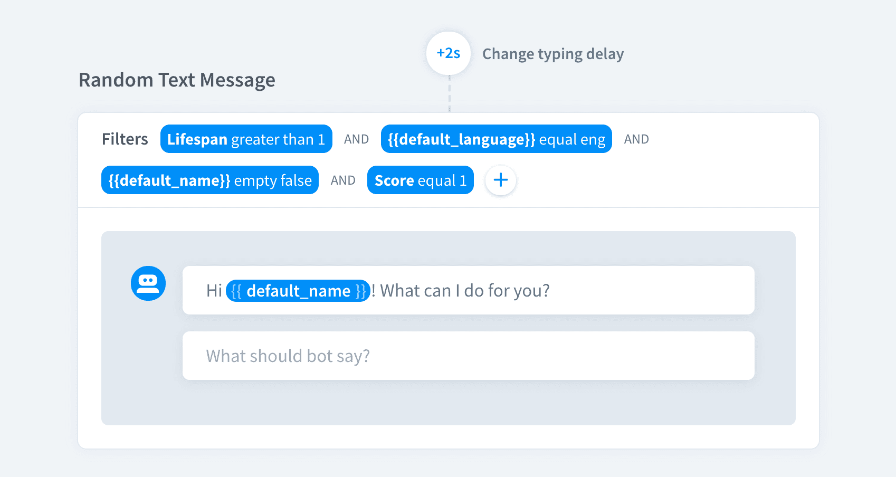
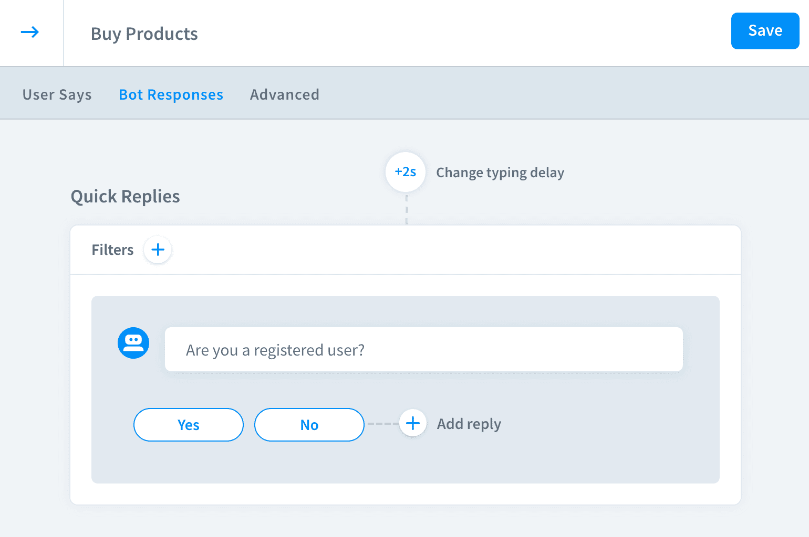
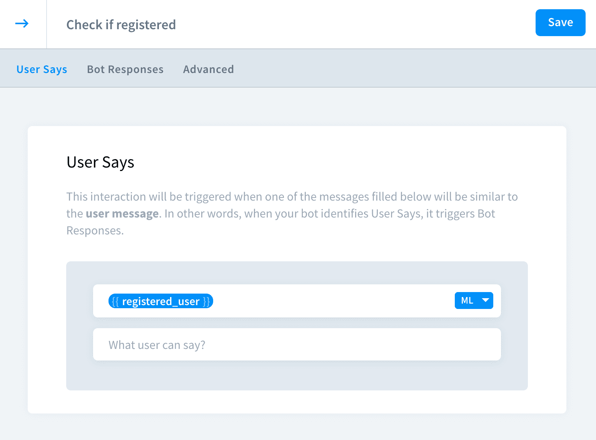
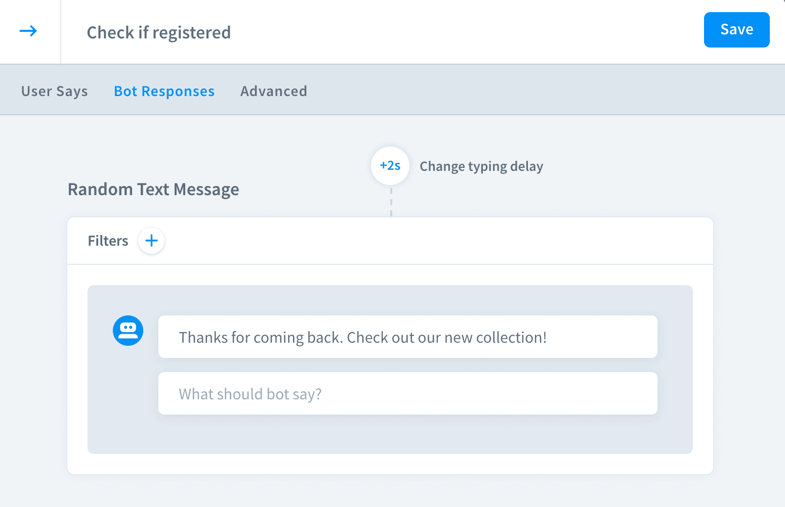
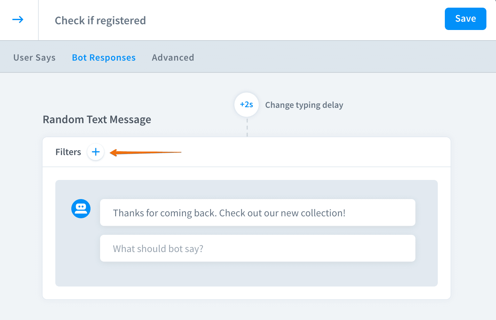
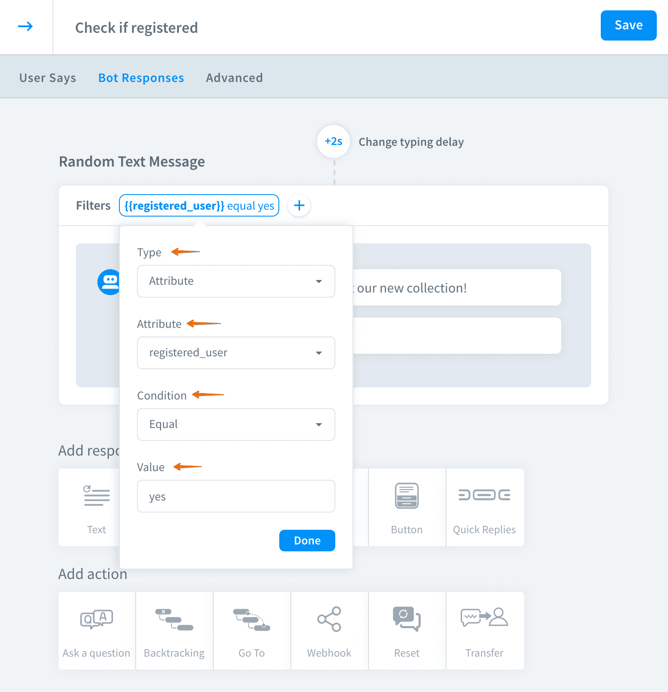
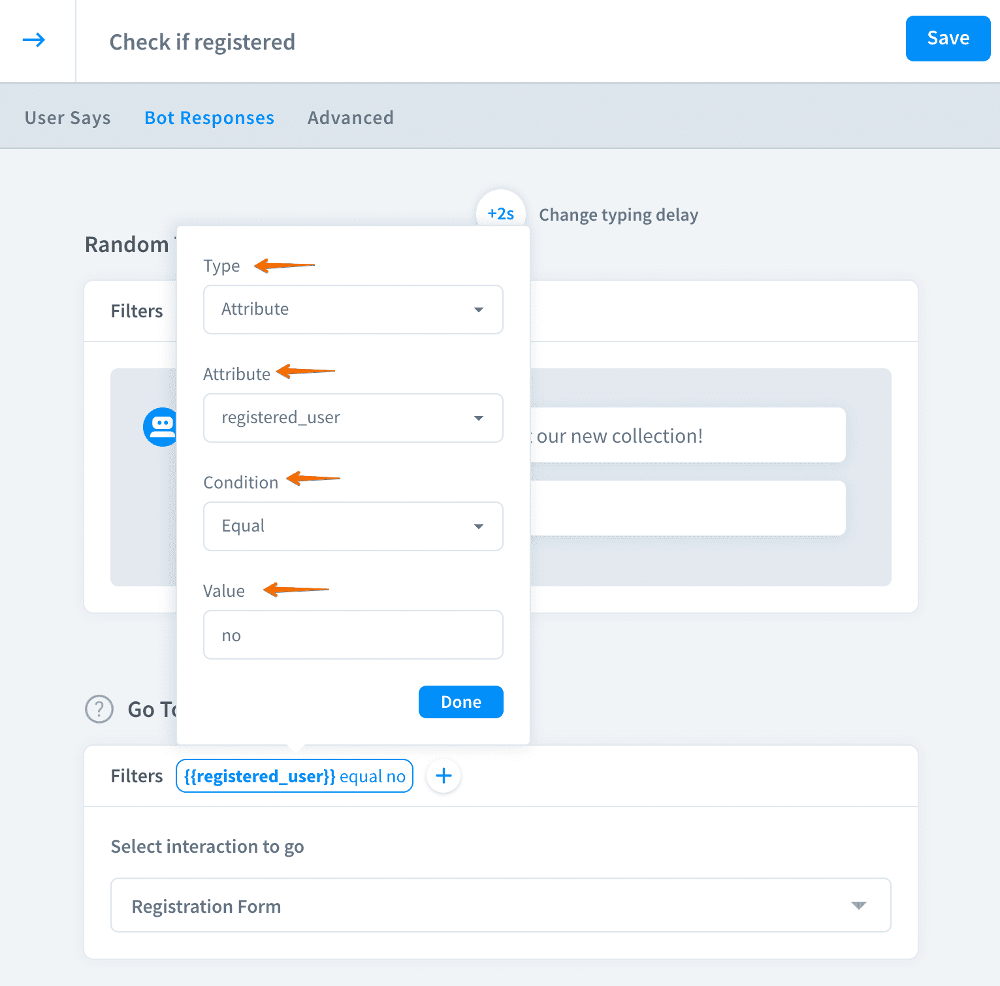

Last update:
Filters allow you to decide when and if the bot responses and actions are shown to the users.
In your everyday life, we tend to adjust our tone of voice, the language we use, sometimes even the things we say to our interlocutor. We speak different things depending on the situation and the relationship, applying filters to our thoughts.
Chatbots aren’t any worse. We can program our digital assistants to reply according to the context of the conversation and the information about the user. For example, we can ask if a visitor is vegetarian and show the menu according to the reply using Filters.

Filters types
- Attribute — create your own or use default attributes to create a rule
- Lifespan — make the bot act depending on the lifespan value
- Score — use the confidence score value to decide what action or response should the bot trigger
- Resolved query — base the action on the user input
- Trigger — determine triggers to activate bot responses and actions
How filters work
- There are five different filters you can apply: Attribute, Lifespan, Score, Resolver Query and Trigger.
- You can apply multiple filters to single response or action.
- Responses or actions will be shown to the users only if the criteria in the filters are met.
How to use filters
Imagine a situation when you want your bot to forward registered users to your products and the new ones to your registration form.
- Create a flow to check if the user is registered or not. 
- Save your reply to the attribute
registered_user - In the next interaction add a bot response or action that you want to show to the users that already have the account. 
- Click the
+icon to add a new filter.  - 4. Add a filter to display this message only to registered users. 
- Similarly, add another bot action and apply a filter to it. The go to action that leads to the registration form will be shown only to the users without the account. 
Savethe interaction to keep your work.